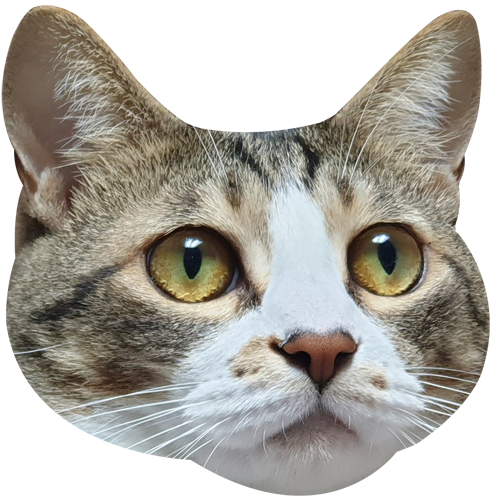
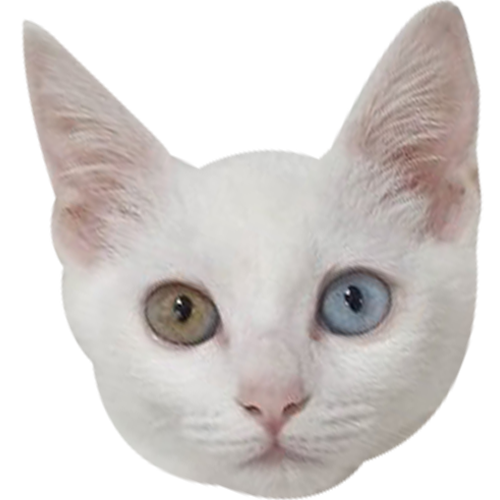
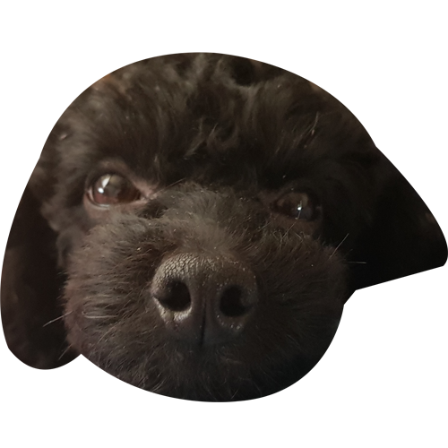
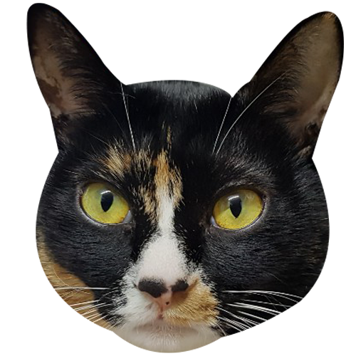

혜리네 동물농장

- 송호두
- 생년월일 : 180513
- 품종 : 코리안숏헤어
- 포지션 : 얼음공주
- 취미/특기 : 외출하고 돌아온 주인 정강이에 이마박치기하기
- 성격 : 도도한척하지만 넘치는 애교를 주체못하는 편
- 가족이 된 이야기 : 혜리 대학동기 민지네 집에서 길고양이가 새끼 다섯마리를 낳고 차에 치어 죽는 사고가 발생했다.
민지네 집에는 강아지들밖에 키워본 적이 없어서 본가에서 고양이를 키우는 혜리에게 도움요청을한다.
결국 다섯마리 고양이중 세마리만 살아남았는데 그 중에서 제일 식탐도 좋고 활발한 아기 고양이를 데려와 접종도하고 분유도 타 먹이며 애지중지 키웠다.

- 송마루
- 생년월일 : 200329
- 품종 : 브리티쉬 숏헤어&스코티쉬 폴드
- 포지션 : 비선실세
- 취미/특기 : 호두간식뺏어먹기, 닫힌 화장실 문 열어달라고 울며 보채기, 모두가 잠든 시간에 울면서 봐달라고 조르기
- 성격 : 겁이 너무 많지만 친해지면 사람손길보다 더 좋아하는 게 없을정도로 개냥이
- 가족이 된 이야기 : 2020년 취업에 성공한 혜리를 따라 서울로 상경한 호두는 하루9시간정도 가량을 집에서 혼자 시간을 보내야만 했다.
혼자 있는 시간이 길어져 외로움을 타 퇴근하고 집에 돌아올때마다 애교가 부쩍 늘어난 호두를 보니 마음이 안좋아져 동생을 분양받기로 결정했다.
하남시 근처 고양이 가정분양을 한다는 집을 찾아가 직접 데려왔다.
처음에는 겁이 많아 호두와 잘 친해질 수 있을까 싶었지만 다른 동물들한테는 눈길도 안주면서 호두에게만 장난을 치는 모습을 보니 내심 뿌듯하기도 하다.

- 송깜비
- 생년월일 : 1405
- 품종 : 토이푸들
- 포지션 : 우리집 사고뭉치
- 취미/특기 : 산책할때 강시처럼 폴짝폴짝 뛰기, 빨래통 뒤져서 빨래 잘근잘근 씹기
- 성격 : 산책을 너무 좋아해서 리드줄만 꺼내들면 좋다고 방방뛸 정도로 활발한 편
- 가족이 된 이야기 : 여동생 고등학교 입학선물로 데려온 깜비이지만 산책은 매일 혜리가 시켜줘서 혜리만 잘 따르는 편이다.
처음 데려왔을때는 걸음마도 제대로 못 걸을 정도로 작았지만 지금은 깜비, 호두, 마루, 은솜이 중에서 제일 덩치가 클 정도로 많이 컸다.
깜비를 분양했던 곳에서는 토이푸들이라며 별로 크지 않을것이라며 호언장담을 하셨지만 너무 잘 먹인 탓일까 중형견 사이즈만큼 커버렸다.

- 고은솜
- 생년월일 : 150720
- 품종 : 코리안숏헤어
- 포지션 : 안방마님
- 취미/특기 : 가만히 누워서 다른 동물들이 뭐하고 노는지 관찰하기, 엄마 팔베게 하고 자기
- 성격 : 세상 찐 고양이. 엄마만 따라다니고 엄마밖에 모르는 바보
- 가족이 된 이야기 : 고3 수시발표가 끝나고 할일이 없어 동네에서 놀다가 집으로 돌아가는 골목길에서 아기고양이 울음소리가 들렸다.
소리를 따라 가보니 가로등 밑에 태어난지 얼마 되지 않은 아기고양이가 혼자 덩그러니 남아있었다.
만지면 어미고양이가 데려가지 않는다는 말에 그냥 지나치려고 했으나 이미 많은 사람들이 그 아기 고양이를 만지고 있었고 골목으로 들어오는 차들도 아기고양이를 못보고 차로 칠뻔도 했었다.
그럴때마다 심장이 조마조마해 아기고양이 곁을 30분가량 지키다가 결국 집으로 데려왔다.
부모님이 처음에는 크게 반대를 했지만 태어난지 일주일쯤 되어보이는 생김새와 삐약거리는 울음이 귀여워 그대로 우리 가족이 되었다.